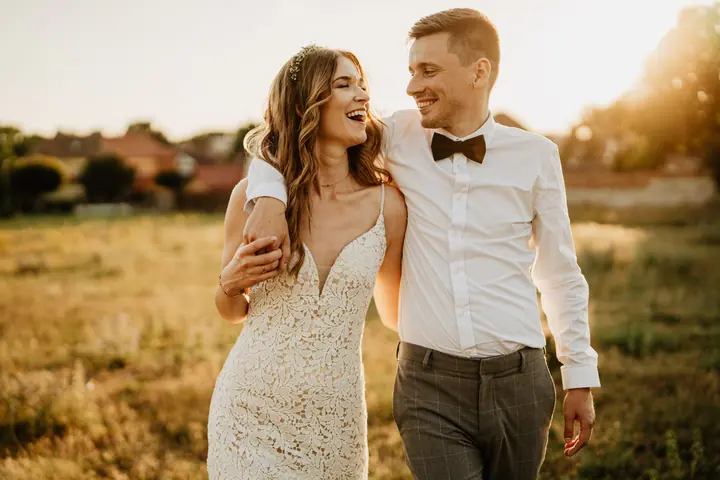
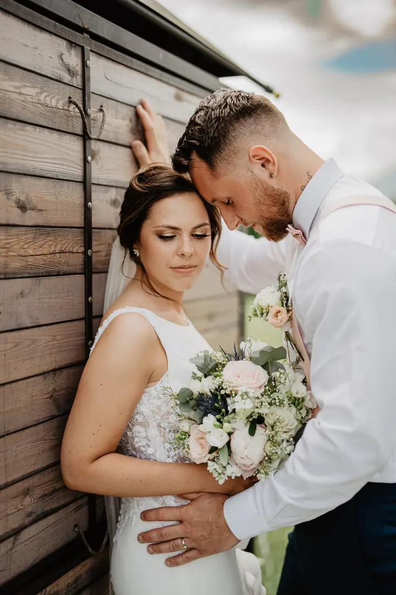
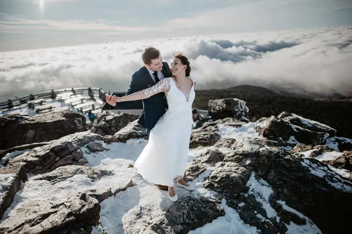

jedna
Svatby
Dostanete ode mě úplně všechny fotky ze svatby, nejen ty upravené. Hotové je máte do týdne, nejpozději do 14 dní. K focení si můžete přidat i svatební video nebo fotokoutek s vlastní obsluhou.

Svatební fotograf · Dubí u Teplic, Teplice a okolí, kdekoliv po domluvě

Jmenuji se Ladis Pejchar a fotím svatby, maturitní plesy i rodiny. Nejraději mám světlo kolem západu slunce a večerní fotky, kdy se rozsvítí prskavky a světýlka. Můj ateliér je v Dubí u Teplic, ale přijedu za vámi kamkoliv.
Více o mně
Co fotím
jedna
Dostanete ode mě úplně všechny fotky ze svatby, nejen ty upravené. Hotové je máte do týdne, nejpozději do 14 dní. K focení si můžete přidat i svatební video nebo fotokoutek s vlastní obsluhou.
dvě
Párové, rodinné a těhotenské focení v klidném tempu. Při portrétním focení si fotky k úpravě vybíráte sami.
tři
Kromě svateb se specializuji na maturitní plesy a další akce. Fotím celý večer od nástupu až po zábavu.
Ve dvou vánočních místnostech mého ateliéru v Dubí u Teplic je spousta scén. Focení trvá zhruba 30 minut, za 2999 Kč dostanete 10 upravených fotek a garantuji vám, že je budete mít do Vánoc.

Nejlepší světlo přichází kolem západu slunce.


Za objektivem
Jsem z Dubí u Teplic, kde mám i svůj ateliér. Specializuji se na svatby, maturitní plesy a další akce, ale rád fotím i páry, rodiny a budoucí rodiče. Všechny ukázky, které tu vidíte, jsou z opravdových svateb. Nejsou to editorialy ani workshopy.
Novomanželské portréty nejraději rozdělím do tří kratších bloků. Odpoledne fotíme pro jistotu, kdyby později pršelo, kolem západu slunce je nejlepší světlo a večer vznikají netradiční fotky s prskavkami. Od hostů se tak nevzdálíte na dlouho a odnesete si tři různé nálady. Pokud chcete fotit jen jednou, je to samozřejmě taky v pořádku.
Na svatbě se věnuji jen vám. Fotokoutek má vlastní obsluhu a fotky z něj se tisknou rovnou na místě. Po svatbě od vás dostanete úplně všechny fotky, které jsem nafotil, a ty upravené máte obvykle do týdne.
Ladis
Napište mi přes poptávkový formulář. Termín je pro vás pevně rezervovaný ve chvíli, kdy uhradíte rezervační zálohu na účet. Soboty a oblíbená data se plní nejdřív.
Společně projdeme harmonogram. Domluvíme se, kdy uděláme skupinové fotky a jestli portréty rozdělíme na odpoledne, západ slunce a večer.
Fotím celý den a vy se můžete věnovat hostům. Pokud si objednáte fotokoutek, stará se o něj vlastní obsluha a fotky z něj se hned tisknou.
Upravené fotky dostanete do týdne, nejpozději do 14 dní, v zaheslované online galerii. Najdete v ní i všechny neupravené fotky ze svatby.
Portfolio
Fotografie jsou ilustrační
Otázky
Jsem z Dubí u Teplic, ale objednat si mě můžete kamkoliv. Do 30 km od Teplic je doprava zdarma, dál účtuji 9 Kč/km za cestu tam i zpět.
Obvykle do týdne, když mám hodně práce, tak nejpozději do 14 dní. Fotky dostanete v zaheslované online galerii, odkud si je můžete stáhnout v plné kvalitě nebo poslat rovnou do tisku.
Ano, dostanete všechny fotky, které na svatbě vyfotím. Fotky k úpravě vybírám já a upravuji jich hodně. Když se vám líbí i nějaká, kterou jsem nevybral, rád ji dodělám.
Fotíme v ateliéru v Dubí u Teplic od 31. 10. 2026 do 10. 1. 2027. Focení trvá asi 30 minut a stojí 2999 Kč. V ceně je 10 upravených fotek, které si sami vyberete, a každá další stojí 150 Kč. Rezervační poplatek 500 Kč se vám pak odečte z ceny a fotky dostanete určitě do Vánoc.
Napište pár vět o tom, co si představujete. · +420 773 532 391